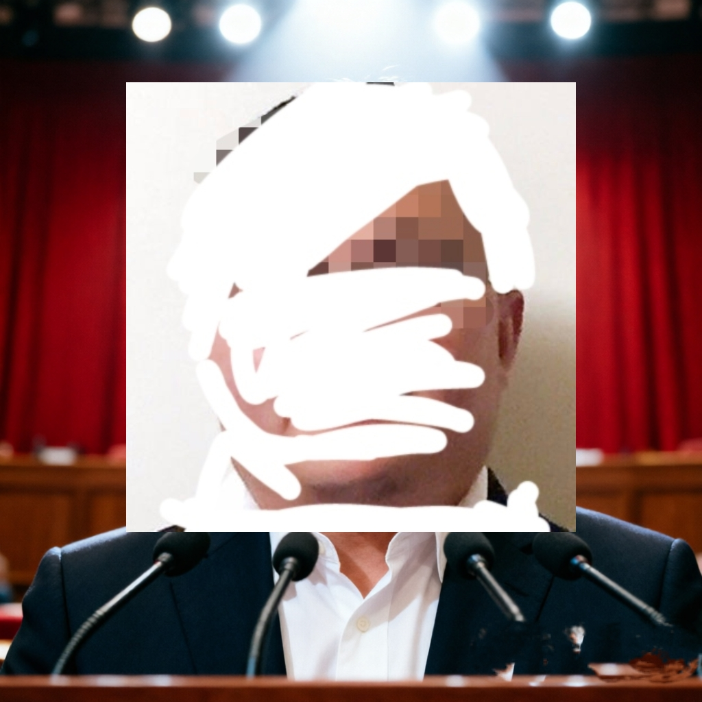

委员会重要组会长名录（部分）
核心领导层 / 常务委员 / 现代保护民科先驱

孙笑川
首席委员长全面主持委员会工作，提出“民科再次发扬光大”的核心纲领。面部因掌握核心机密，作打码处理。
迪克使者
副任委员长负责“人情万物大楼”的日常运营与西装穿搭规范。不过，因为迪克老是沿逆时针旋转而烦恼
勃利淫梦
吾罕大学生物系部长(教授)兼委会生物学科组长负责将二次元生物引入民科研究，致力于研究“淫梦乡妖精与民科结合”。

周厥伦
吾罕大学生物副教授、物理系部长兼委会物理学科组长永动机理论支持者，现在用民科来讲述现代物理科学的错误。不过因为他常常用自己的身体研究生物学从而使他长得像唐弯的某一位歌手🧐
说的道理
委会龙国、日本听证长负责撰写《民科论文集》与日文、龙文原声发言稿，以空白的眼神凝视科学的尽头。
🤩🤩🤩
美国奶浓
委会美国听证长/政治及心理组长"让民科再次伟大"